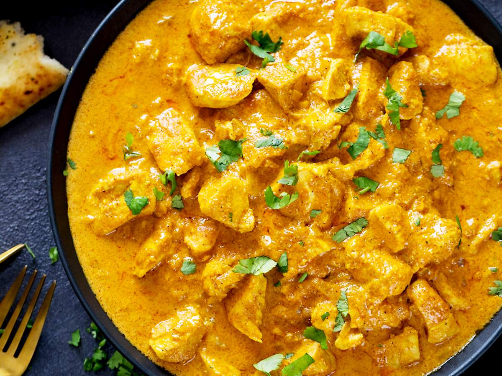

Aves · Frango
Frango ao caril

Ingredientes
- 1 kg de coxa e sobrecoxa ou peitos de frango
- 5 colheres (chá) de sal
- ½ xícara de óleo
- 2 cebolas picadas
- 4 dentes de alho picados
- 1½ colher (chá) de gengibre ralado
- 3 colheres (sopa) de pó de caril (curry)
- 1½ xícara de água
- 4 a 5 tomates sem pele e sem sementes
- 2 colheres (sopa) de folhas de coentro picadas
- 1 potinho de iogurte natural
- 1 colher (sopa) de suco de limão
Modo de preparo
- Lave e seque o frango; polvilhe com 3 colheres (chá) de sal.
- Aqueça o óleo e frite o frango por 3–4 minutos sem dourar. Reserve.
- Na mesma panela, refogue cebola, alho e gengibre até a cebola ficar meio dourada.
- Baixe o fogo; acrescente 1 colher (sopa) de caril e 1 colher (sopa) de água. Cozinhe 2 minutos. Junte tomate picado, 1 colher (sopa) de coentro, o restante do sal e da água.
- Aumente o fogo, acrescente o frango com o caldo do prato e o restante da água. Deixe ferver, tampe e cozinhe cerca de 25 minutos até o frango ficar macio.
- Desligue o fogo, junte iogurte e suco de limão. Sirva ou deixe esfriar e congele.
Observação: O caril pode ser tempero comercial ou mistura de canela, cravo, coentro, cominho e cardamomo.